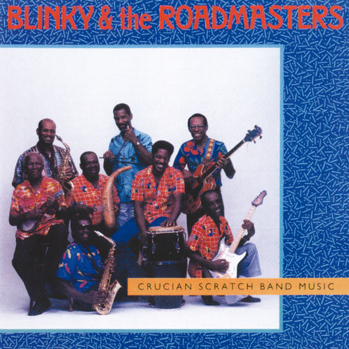

Blinky
Sondra "Blinky" Williams is an American R&B and soul singer-songwriter, probably best known for singing the female lead on the theme for the 1970s TV series, Good Times.
Complete Discography & Tracklists (1)